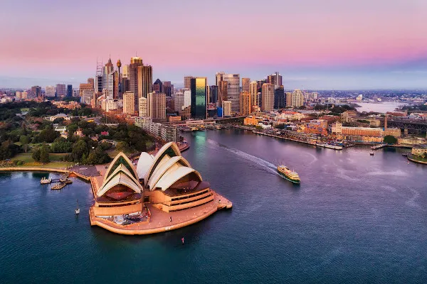

Pacote de Viagem intercâmbio
Austrália
Apresenta grande diversidade de paisagens, caracterizadas
por florestas tropicais, desertos, montes nevados e praias.
Ao longo da costa do nordeste fica a formação de corais mais
importante do planeta, a Grande Barreira Coralina. Camberra,
capital da Austrália, é habitada por 323.056 pessoas.

Canadá
Historicamente, a cultura canadense foi construída pelos
elementos franceses e ingleses combinados à tradição
aborígene local. Outra influência significativa vem dos Estados Unidos,
principalmente por meio da migração e produtos culturais.
Estados Unidos
Os Estados Unidos são famosos por várias coisas,
mas o esporte, a música e a arte são três partes
extremamente marcantes do país. O futebol americano,
o baseball, o basquete e o hóquei no gelo são os quatro
principais esportes jogados por todo o país, apesar de,
é claro, haver vários outros.

Suiça
A cultura suíça também é conhecida por seu artesanato e,
principalmente, pela relojoaria. A indústria de relógios de
luxo na Suíça possui uma excelente reputação de artesanato
com marcas de relógios como Patek Phillippe, Rolex, Tissot,
TAG Heuer, Vacheron Constantin e Chopard.

Japão
Os japoneses têm o sincretismo religioso como marca.
Suas principais crenças têm raízes no xintoísmo e budismo,
mas coexistem com outras religiões, até mesmo com a cristã.
Diferente do que ocorre no Ocidente, no Japão, não há
pregações religiosas e a religião não é vista como doutrina,
mas um modo de vida.

Egito
A cultura do Antigo Egito aparece a partir do modo de vida,
costumes e tradições da antiga sociedade egípcia.
Começou no neolítico e evoluiu a partir de cerca do ano
10000 a.C. até à época romana, quando praticamente
desapareceu ao entrar para o Império Romano e,
especialmente, ao adotar os costumes cristãos.